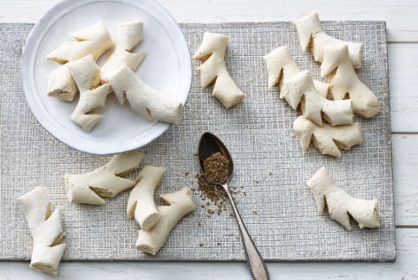

img only Chraebeli

Zutaten
- 500 g Mehl
- 200 g Zucker
- 4 Eier
- 3 EL Kirsch
- 1 Prise Salz
- 1 TL Backpulver
- Pflanzenöl zum Frittieren
- Puderzucker zum Bestäuben
Zubereitung
- Das Mehl in eine Schüssel sieben und in die Mitte eine Mulde drücken.
- Zucker, Eier, Kirsch, Salz und Backpulver in die Mulde geben.
- Die Zutaten in der Mulde zu einem Teig verrühren und dann den Teig kneten, bis er glatt ist.
- Den Teig in einer abgedeckten Schüssel für 30 Minuten ruhen lassen.
- Den Teig auf einer bemehlten Arbeitsfläche ca. 1/2 cm dick ausrollen und in längliche Stücke schneiden.
- Mit einer Gabel kleine Löcher in die Teigstücke stechen.
- Das Pflanzenöl in einem großen Topf erhitzen und die Teigstücke darin goldbraun frittieren.
- Die Chraebeli mit einem Schaumlöffel aus dem Fett nehmen und auf Küchenpapier abtropfen lassen.
- Die abgekühlten Chraebeli mit Puderzucker bestäuben und servieren.
Zeitangaben
- Vorbereitungszeit: 30 Minuten
- Kochzeit: 15 Minuten
- Gesamtzeit: 45 Minuten
Portionen
ca. 60 Stück